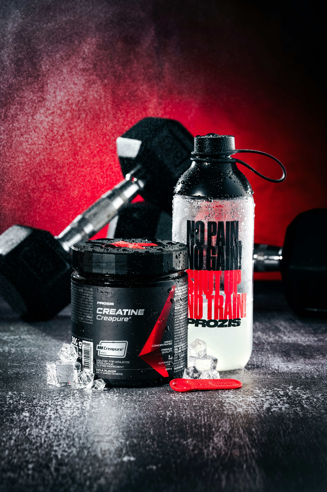
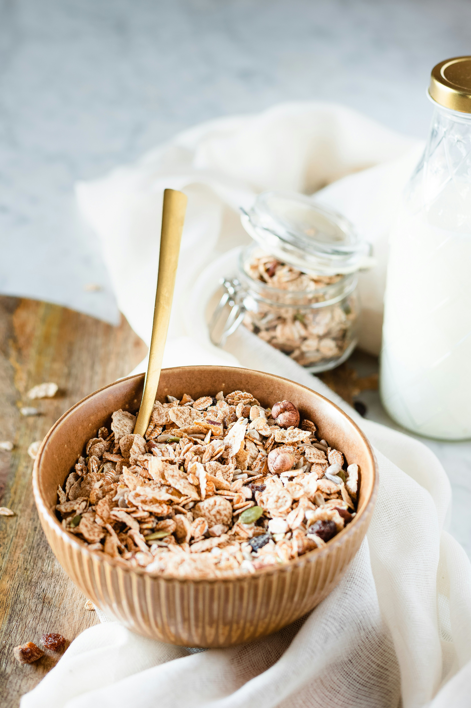
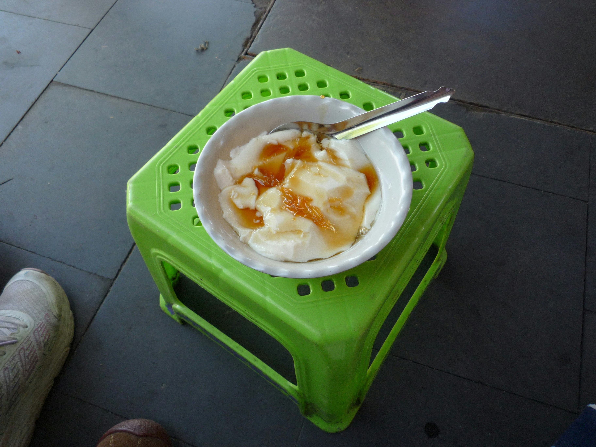

Amul Protien Milk
1-L/- High protien and calcium for strong bones and drink with protien shake,olts..etc
₹199

Quaker Rolled Oats
1-Kg/- Rich in fiber and good for breakfast,pre-workout and helps keep you full longer, easy way to prepare with milk and fruits
₹399


Greek Yougurt
1kg/- Epigamia Greek Yogurt|Nestle A+ , Amul masti Dahi , Mother Dairy Curd .Rich in High protien and good for digestion with probiotics
₹899